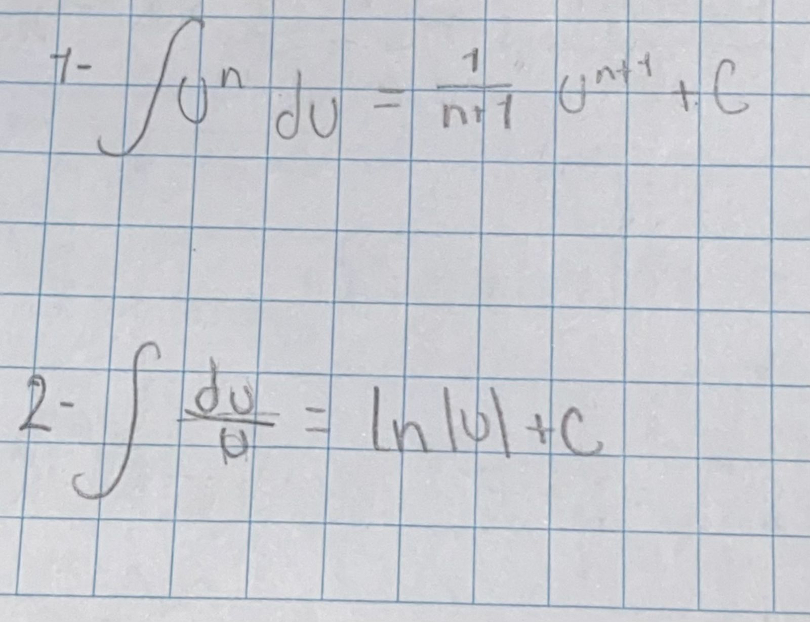

Problema: Calcular la integral definida de la función \( \int_0^{\pi/4} \sin(2x) \cos(2x) \, dx \).
Solución:
Utilizamos el método de sustitución. Sea \( u = \sin(2x) \), entonces \( du = 2\cos(2x) \, dx \).
Ahora, reemplazamos en la integral:
\[ \frac{1}{2} \int_0^{\pi/4} 2u \, du = \frac{1}{2} \left[ u^2 \right]_0^{\pi/4} = \frac{1}{2} \left( \sin^2\left(\frac{\pi}{2}\right) - \sin^2(0) \right) = \frac{1}{2} \left(1 - 0\right) = \frac{1}{4} \]
Problema: Calcular la integral definida de la función \( \int_0^1 x\ln(x) \, dx \).
Solución:
Usamos el método de sustitución por partes con \( u = \ln(x) \) y \( dv = x \, dx \).
Entonces, \( du = \frac{1}{x} \, dx \) y \( v = \frac{x^2}{2} \).
Aplicamos la fórmula de sustitución por partes:
\[ \int x\ln(x) \, dx = \frac{x^2}{2}\ln(x) - \int \frac{x^2}{2} \cdot \frac{1}{x} \, dx = \frac{x^2}{2}\ln(x) - \frac{1}{2}\int x \, dx \]
Integramos y evaluamos en los límites:
\[ \left[ \frac{x^2}{2}\ln(x) - \frac{1}{2} \cdot \frac{x^2}{2} \right]_0^1 = \left[ \frac{1}{2}\ln(1) - \frac{1}{4} - \left(0 - \frac{0}{4}\right) \right] = \frac{1}{2} \cdot 0 - \frac{1}{4} = -\frac{1}{4} \]
Problema: Calcular la integral definida de la función \( \int_1^2 e^{2x} + e^x \, dx \).
Solución:
Usamos el método de integración por sustitución. Sea \( u = e^x \), entonces \( du = e^x \, dx \).
Entonces, reemplazamos en la integral:
\[ \int (e^{2x} + e^x) \, dx = \int e^{2x} \, dx + \int e^x \, dx = \frac{1}{2}\int du + \int u \, du \]
Usamos la fórmula de arco tangente inverso:
\[ \left[ \frac{u^2}{2} + \ln|u| \right]_1^2 = \left[ \frac{2^2}{2} + \ln|2| - \left(\frac{1^2}{2} + \ln|1|\right)\right] = 4 + \ln(2) - \left(\frac{1}{2} + 0\right) = \frac{7}{2} + \ln(2) \]
Problema: Calcular la integral definida de la función \( \int_0^1 \frac{x(x+1)}{x^2+3x+2} \, dx \).
Solución:
Usamos el método de integración por fracciones parciales. Descomponemos la función en fracciones parciales:
\[ \frac{x(x+1)}{x^2+3x+2} = \frac{A}{x+1} + \frac{B}{x+2} \]
Luego, encontramos los valores de \( A \) y \( B \) y descomponemos la integral:
\[ \int \frac{x(x+1)}{x^2+3x+2} \, dx = \int \left(\frac{A}{x+1} + \frac{B}{x+2}\right) \, dx \]
Resolvemos las fracciones parciales:
\[ \int \frac{A}{x+1} \, dx + \int \frac{B}{x+2} \, dx \]